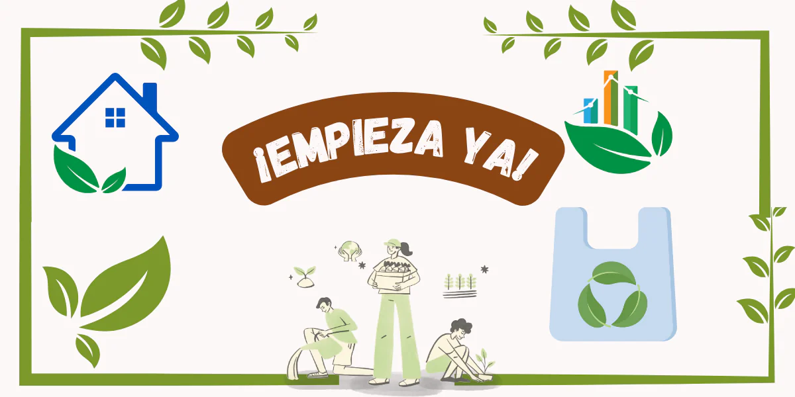
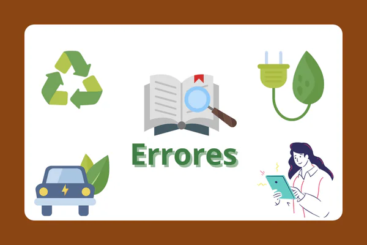
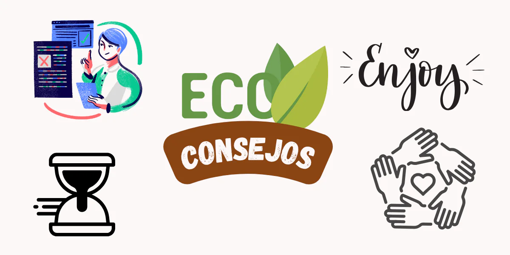

Cómo empezar
Adoptar un estilo de vida ecológico no significa cambiarlo todo de golpe, sino tomar decisiones conscientes día a día. Aquí tienes algunos pasos sencillos para comenzar:
- Reduce el plástico: Usa bolsas reutilizables, botellas de agua de acero o vidrio, y evita productos con empaques innecesarios.
- Elige productos sostenibles: Opta por artículos hechos de materiales naturales como bambú, corcho o algodón orgánico.
- Compra local y a granel: Apoya a productores locales y reduce el desperdicio de envases.
- Ahorra energía y agua: Apaga luces que no uses, desconecta aparatos y repara fugas.
- Recicla y reutiliza: Separa tus residuos y dale una segunda vida a objetos antes de desecharlos.
- Cuida tu alimentación: Reduce el consumo de carne, elige productos de temporada y evita el desperdicio de comida.
- Infórmate y comparte: Aprende sobre sostenibilidad y motiva a otros a hacer pequeños cambios.
Errores comunes
Adoptar un estilo de vida sostenible es un proceso, y es normal cometer errores al principio. Aquí algunos de los más comunes:
- Buscar la perfección: No necesitas hacerlo todo perfecto. Cada pequeño cambio cuenta.
- Consumir más en nombre de lo “eco”: Comprar muchos productos ecológicos nuevos sin necesidad también genera impacto. Lo más sostenible es usar lo que ya tienes.
- No investigar los materiales: No todo lo que dice “eco” realmente lo es. Verifica si los productos son compostables, reciclables o de origen renovable.
- Olvidar reducir y reutilizar: Reciclar es importante, pero reducir el consumo y reutilizar es aún mejor.
- Cambiar todo de golpe: Hacer cambios graduales es más efectivo y sostenible a largo plazo.
- No considerar el transporte: Comprar productos ecológicos importados puede tener una huella de carbono alta. Prioriza lo local.
- Pensar solo en lo físico: La sostenibilidad también incluye lo digital: reduce el uso innecesario de energía en dispositivos y almacenamiento en la nube.
Consejos finales
Aquí tienes algunos consejos finales que te pueden ayudar a mantener un estilo de vida ecológico:
- Empieza con lo que tienes: No necesitas comprar todo nuevo. Usar lo que ya tienes es el primer paso hacia la sostenibilidad.
- Sé paciente contigo misma: Cambiar hábitos lleva tiempo. Cada pequeño paso cuenta.
- Inspira, no impongas: Comparte tu estilo de vida con respeto. El ejemplo es más poderoso que la presión.
- Infórmate constantemente: La sostenibilidad evoluciona. Mantente al día con nuevas ideas, materiales y soluciones.
- Disfruta el proceso: Vivir de forma ecológica también es reconectar con lo simple, lo natural y lo esencial.